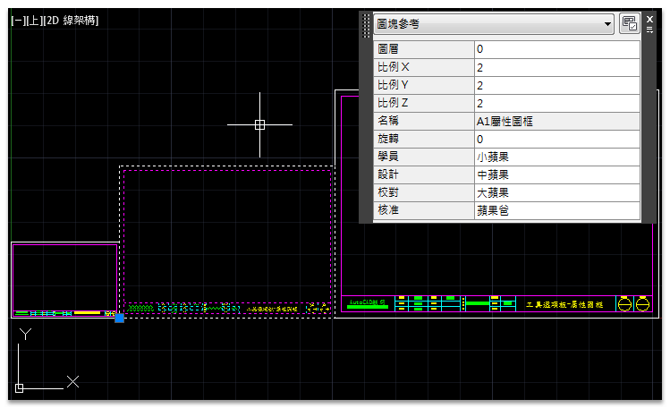
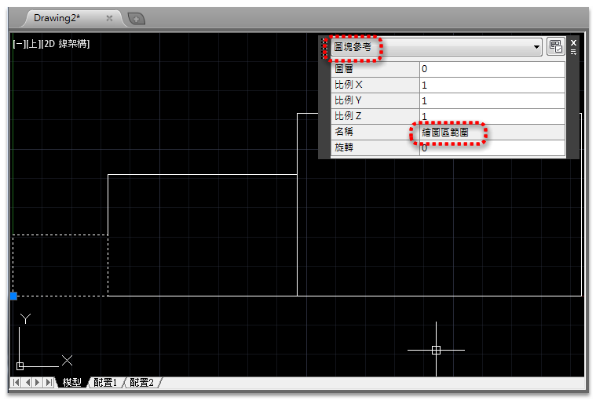

大家好：
「工具選項板+標準A1屬性圖框設置」功能步驟，是結合「基礎功能」整合成「進階功能」，並應用到目前繪圖工作中！
身為一個專業的繪圖工程師(設計師)，絕對不容錯過的教程，有興趣的朋友們趕快來瞧瞧吧～
※製作1：1標準A1屬性圖框，透過「工具選項板」，滿足使用者在「模型空間」插入使用「A1屬性圖框」，並依照「圖面比例(標註比例)」自動調整圖框比例。

※變更「A1屬性圖框」比例(大小)，可以透過「性質」選項板，進階方式可用 BSCALE指令 (Express Tool)，變更「A1屬性圖框」比例(大小)。

在各位了解以上組合功能用法之後，接著可以來試試之前推出的[測驗題]標準作業：A1圖框二種標註比例圖面(三)這篇文章，關於「繪圖區範圍」圖塊，也可以如法炮製喔～
※製作1：1標準A1繪圖區範圍，透過「工具選項板」，滿足使用者在「模型空間」插入使用「繪圖區範圍」，並依照「圖面比例(標註比例)」自動調整繪圖區範圍比例。

※變更「繪圖區範圍」比例(大小)，可以透過「性質」選項板，進階方式可用 BSCALE指令 (Express Tool)，變更「繪圖區範圍」比例(大小)。

2.延伸範例主題： [測驗題]標準作業：A1圖框製作、樣版檔設定(一)
3.延伸範例主題： [測驗題]標準作業：A1圖框樣版檔規劃(二)
4.延伸範例主題： [測驗題]標準作業：A1圖框二種標註比例圖面(三)
5.延伸範例主題： [進階]AutoCAD巨集－建立視埠+設定比例+鎖護視埠
6.延伸範例主題： [進階]工具選項板+標準A1屬性圖框設置
7.延伸範例主題： [私房教學1-5]AutoCAD配置空間分圖作業